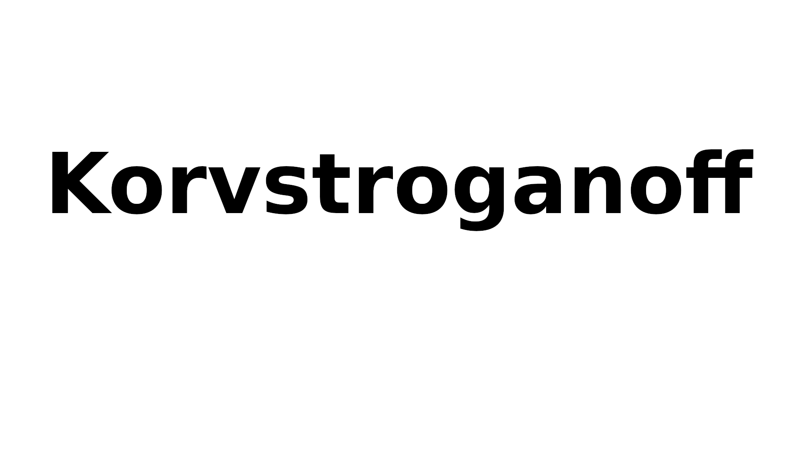

Korvstroganoff

Description
This recipie is easy to follow and will help you make a excellent korvstroganoff
Ingridients
- 1 st Falukorv
- 6 dl ris
- 2 st gul lök
- Tomatpure 3 msk
- 2 1/2 dl matlagninsgrädde
- 1 dl mölk
- 1 msk dijonsenap
- 1 msk soja
- Hacka och stek löken
- Skiva och stek sedan falukorven tillsammans med löken
- Blanda i tomatpure och stek någon minut till
- Lägg i dijonsenap och soja tillsammans med falukorven och löken
- Tillsätt matlagninsgrädde och mjölken
- Koka riset